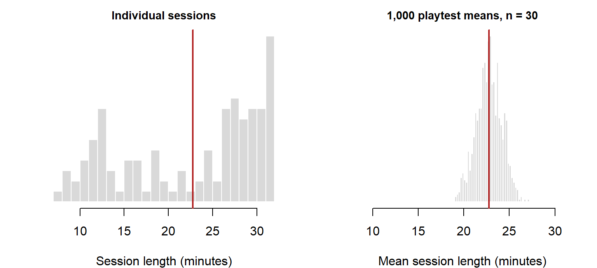

Why the next playtest would give different numbers
Every number in a playtest report describes the players who happened to turn up. Bring in a different group and every number moves. This page is about how far: what sampling variability is, and how a confidence interval turns one playtest’s number into an honest range for the players you care about. The playtest question running through it: “Build B sessions averaged 24 minutes. How sure can we be?”
Stage: 2 · Core. Time: 15 minutes in class (the two simulation figures); the rest is reading. Before this:Cleaning and Transforming. Key terms: sampling variability, sampling distribution, standard error, confidence interval. R you will write:t.test(x)$conf.int.
Learning Outcomes
By the end of these notes you can:
explain why a second playtest with different players would give different numbers, even if nothing about the game changed;
say in plain words what a sampling distribution is and what the standard error measures, and tell the standard error from the standard deviation;
compute a 95% confidence interval for a mean with t.test(), and say what the “95%” does and does not mean;
report a mean with its interval and its n.
Why This Matters for Playtesting
Build B’s sessions were longer than Build A’s. Is that because Build B is better, or because Build B happened to get the more patient players? You cannot answer that until you know how much a number would move by chance alone.
That is what this page is for. Every comparison in Stage 2 rests on it. The next page, Comparing Groups, uses it to decide whether a difference between builds is real.
Sampling Variability
Split the 120 Tidebreak sessions into four batches of 30, in the order they were recorded, and treat each as a separate playtest. Same game, same build mix, same procedure. The mean score of each batch:
sessions |>mutate(batch =ceiling(row_number() /30)) |># rows 1-30 are batch 1, and so ongroup_by(batch) |>summarise(mean_score =round(mean(score)))
Four playtests, four different answers, from 1313 to 1550. Nothing changed except which players were in each batch.
Sampling variability is this: a different sample gives a different number, even from the same population. It is not a mistake and it cannot be avoided. The only question is how big it is, and that depends on two things: how much the players differ (the SD) and how many of them you measured (n).
The Sampling Distribution
To see sampling variability properly you need many playtests, not four. Real studios cannot afford that, but a simulation can.
Imagine everyone who will ever play Tidebreak, and suppose their session lengths look exactly like the 120 you recorded. Build that population by copying the sessions a thousand times over, then run a thousand imaginary playtests of 30 players each, and record each playtest’s mean. You do not need to write this code; read it as a description of the experiment.
pop <-rep(sessions$session_minutes, times =1000) # the imaginary populationset.seed(7)means_30 <-replicate(1000, mean(sample(pop, 30))) # 1,000 playtests of 30
sample(pop, 30) draws 30 players at random; mean() is that playtest’s result; replicate(1000, ...) runs it a thousand times. The thousand means form the sampling distribution: the spread of results across every playtest you might have run.
Show the code
op <-par(mfrow =c(1, 2), mar =c(4, 3, 2, 1))hist(pop, breaks =26, col = pal$fill, border ="white", main ="Individual sessions",xlab ="Session length (minutes)", ylab ="", yaxt ="n", cex.main =0.9)abline(v = pop_mean, col = pal$highlight, lwd =2)hist(means_30, breaks =30, col = pal$fill, border ="white",main ="1,000 playtest means, n = 30", xlim =range(pop),xlab ="Mean session length (minutes)", ylab ="", yaxt ="n", cex.main =0.9)abline(v = pop_mean, col = pal$highlight, lwd =2)par(op)

Figure 1: Individual sessions (left) are lopsided and two-humped. The means of 1,000 playtests of 30 (right) are far less spread out, and centred on the truth.
Two things stand out.
The means are centred on the truth. The population mean is 22.8 minutes; the average of the thousand playtest means is 22.8. Any one playtest misses, but not systematically in one direction.
The means are far less spread out than the players. Individual sessions run from 7.7 to 32 minutes. Playtest means of 30 players fall almost all between 19.9 and 25.3. Averaging cancels out most of the differences between players.
The standard error
The spread of the sampling distribution has its own name: the standard error (SE). It is how far one playtest’s mean is typically off from the truth. You never get to run a thousand playtests, but you do not need to: the SE can be estimated from one sample as the SD divided by the square root of n.
You need to know the difference between the two:
The SD describes the players: how much one session differs from another.
The SE describes your estimate: how much your mean would move if you ran the playtest again.
More players does not make the players less varied, so the SD stays put. It makes your estimate steadier, so the SE shrinks, but slowly: four times the players halves the SE.
Going further: why the formula works, why the means form a bell even when the data does not (the central limit theorem), and the bootstrap are on Sampling Theory.
Confidence Intervals
About 95% of playtest means land within about 2 SEs of the true mean. Turn that round, and the true mean is within about 2 SEs of your playtest’s mean 95% of the time. That range is a 95% confidence interval:
mean ± about 2 × SE
For real: Build B’s 60 sessions. t.test() computes the interval for you:
In a report you would write: “Build B sessions averaged 24.2 minutes (95% CI 22.4 to 26, n = 60).” The interval says the data is consistent with a population average anywhere from 22.4 to 26 minutes. That honesty is the point: a reader now knows how much weight the 24.2 can bear.
NoteGoing further: these sessions are not quite independent
The interval treats Build B’s 60 sessions as 60 independent observations. They are not: they come from 15 players who each played 4 times, and one player’s sessions resemble each other. The honest effective sample size is somewhere between the number of players and the number of sessions, so the true interval is somewhat wider than this one. Handling repeated measurements properly needs methods beyond this course; the practical lesson is to report both counts (rule 8).
What “95%” means
This is the most misread number in statistics. The 95% describes the method, not this particular interval. If you ran the playtest many times and computed an interval each time, about 95% of those intervals would contain the true population mean. Any one interval either contains it or does not; you never know which.
Figure 2: Twenty simulated playtests of 30 players, each with its 95% confidence interval. About one in twenty misses the true mean (dashed line), and nothing warns you which one.
In this run, 1 of the 20 intervals missed the true mean, close to the one in twenty the method promises. A playtest that misses has done nothing wrong; it drew an unusual set of players, which is exactly what the 5% allows for.
So do not say “there is a 95% chance the true mean is between 22.4 and 26”. In a report, give the interval and let it stand for “the plausible range”.
Wider means less certain. An interval narrows with more players (a smaller SE) and widens with more varied players (a larger SD).
For your project: your playtests will be small, often a dozen players. Your intervals will be wide. That is not a failure: it is the honest size of what a dozen players can tell you, and it is exactly what the Discussion section of your report should say.
Worked Example
Build B sessions averaged 24 minutes. How sure can we be? The draft report says: “Build B sessions last 24 minutes on average.”
Step 1: what is the sample? 60 sessions from 15 players, one playtest. A different group would give a different mean.
Step 2: how much would it move? The SD of Build B’s session lengths is 6.94 minutes, so the standard error is 0.9 minutes. A second playtest’s mean would typically land within about 0.9 minutes of this one.
Step 3: give the range. The 95% confidence interval is 22.4 to 26 minutes.
Step 4: rewrite. “Build B sessions averaged 24.2 minutes (95% CI 22.4 to 26; 60 sessions from 15 players).” The claim is now as strong as the data, and no stronger.
Step 5: notice what is still missing. This is one build on its own. Whether Build B’s sessions are longer than Build A’s is a different question, because both numbers wobble. Comparing two groups, and asking whether the gap could be chance, is Comparing Groups.
Interpretation Guidance
What the data shows. One playtest’s mean: 24.2 minutes for Build B.
What the analysis suggests. The population mean is plausibly anywhere from 22.4 to 26 minutes, with values near the centre of that range more plausible than values at its ends.
What can legitimately be concluded. A range, not a point. A decision that depends on the exact value of a mean, such as “sessions must average 25 minutes”, cannot be settled by a playtest whose interval spans both sides of 25.
Common Mistakes
Treating one playtest’s number as a fact about the game. It is a fact about those players. Give the interval.
Confusing the SD and the SE. The SD describes the players; the SE describes your estimate. Reporting an SE as if it were the spread of the players makes the players look far more alike than they are.
Reading “95%” as the chance this interval is right. It describes how often the method works, not this interval.
Expecting a bigger sample to fix everything. Four times the players halves the SE. Doubling the playtest buys less precision than it seems.
Forgetting that sessions are not players. Repeated sessions from the same player are not independent, so an interval built on sessions is somewhat too narrow. Report both counts.
Trusting an interval from a handful of players. With five players and skewed data, the interval is not reliable. Say so rather than quoting it.
Practice
Each takes two or three minutes.
Predict. A playtest of 25 players gives an SE of 2 minutes. Roughly what SE would 100 players give? And 400?
Compute. Find the 95% confidence interval for the mean session length of Build A, and compare its width with Build B’s.
Critique. A report says: “Mean enjoyment was 4.1 (SE 0.08), so players agreed closely about how much they enjoyed it.” What is wrong?
Interpret. In Figure 2, one of the red intervals came from a playtest. Did that playtest do anything wrong?
NoteShow answers
1. About 1 minute with 100 players (four times the players, half the SE) and about 0.5 with 400 (sixteen times the players, a quarter of the SE). Each halving costs four times as many players.
Build A’s interval is 19.2 to 23.4 minutes, and it is wider: the same number of sessions, but Build A’s session lengths are more spread out (SD 8.3 against 6.9), because of its two groups of players.
3. The SE says how precisely the mean is known, not how much players agreed. With 120 sessions, the SE is small even if players disagreed widely. To describe agreement, report the SD or the distribution. (Enjoyment is also a 1 to 7 rating, so the distribution is the better summary anyway; see Data, Variables and Types.)
4. No. It drew an unusual set of players by chance. A 95% method is designed to miss about one time in twenty, and nothing in the data warns you when it is your turn. That is why a single surprising result is a reason to run another playtest, not to redesign the game.
Summary
A different sample gives a different number. That is sampling variability, and it is unavoidable.
The sampling distribution is the spread of a summary across every playtest you might have run. Its spread is the standard error: how far your estimate is typically off.
The SD describes the players; the SE describes your estimate. Four times the players halves the SE.
A 95% confidence interval is about mean ± 2 SE, from t.test(x)$conf.int. The 95% describes the method: it captures the true value in about 95% of playtests.
Report a mean with its interval and n.
Key term
Meaning
Sampling variability
Different samples from the same population give different results
Sampling distribution
The distribution of a summary across many possible samples
Standard error
How far an estimate is typically off: the spread of the sampling distribution
Confidence interval
A range of plausible values for the population, given the sample
Your playtest found a mean session length of 24 minutes, and your producer wants “the number”. Do you give them 24, or the interval? What do you say to justify your choice?
Doubling the playtest from 30 to 60 players narrows the interval by less than a third. When is that worth the cost, and when is it not?
Your interval for Build B is built on sessions, but players played four sessions each. Is the true interval wider or narrower, and why does it matter for a design decision?
Your team’s next playtest will have twelve players. What would you say in the report about how far its numbers can be trusted?